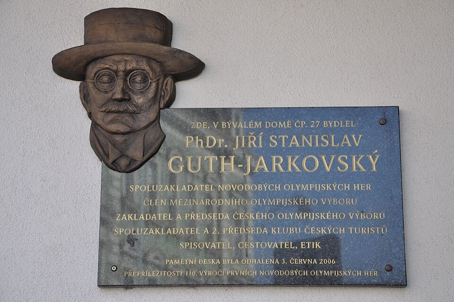
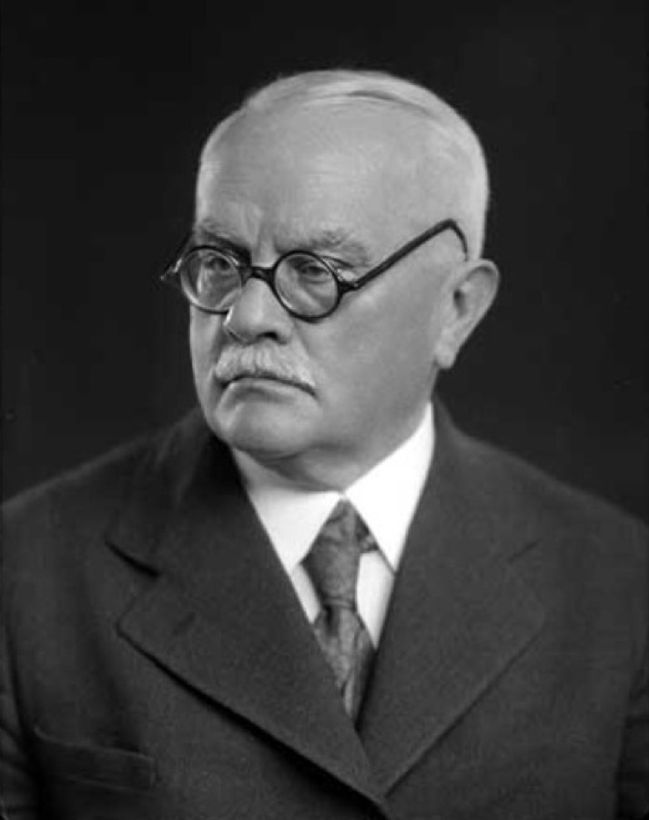
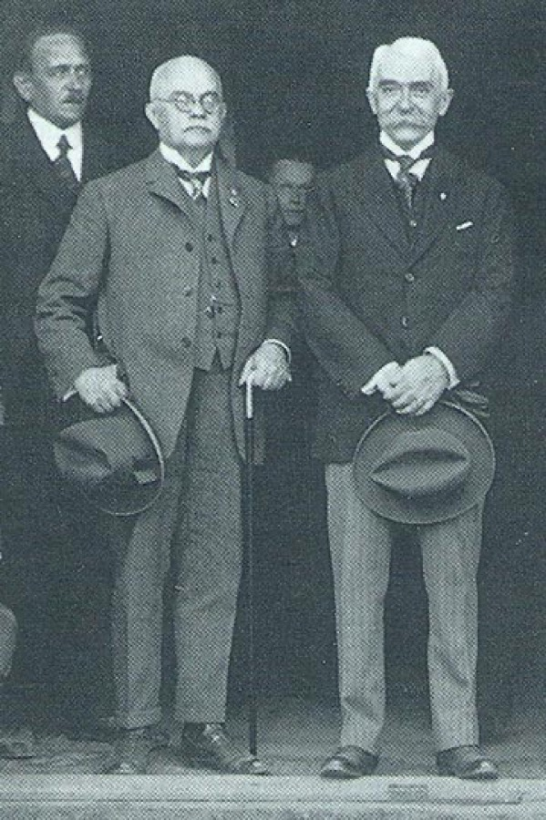
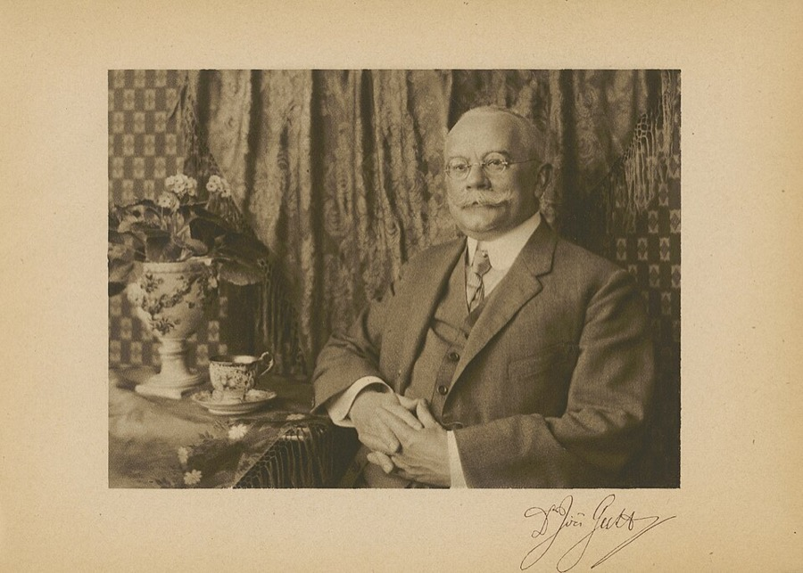
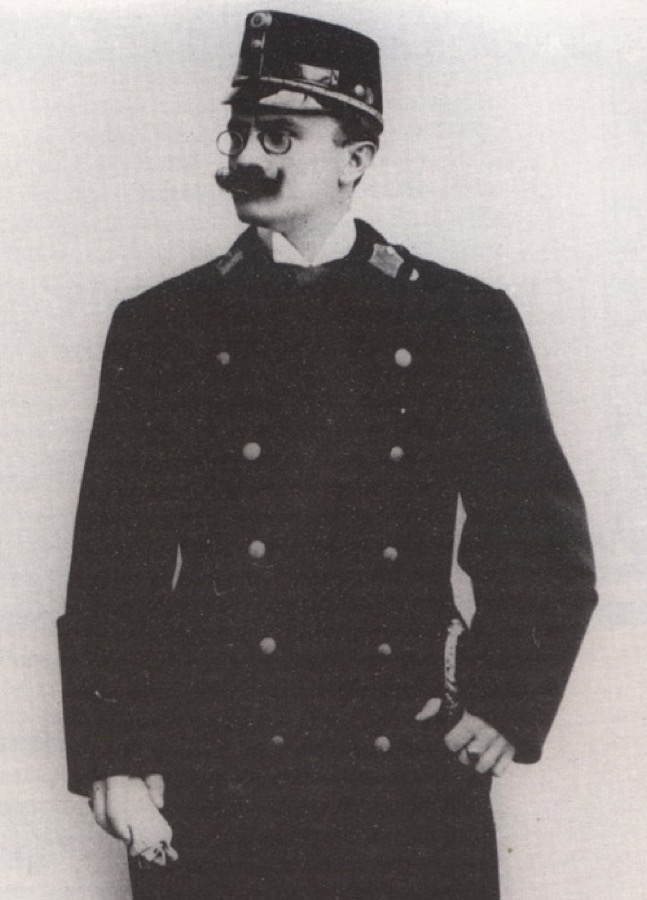

Logo A: varianty podle
Jiřího Gutha-Jarkovského
PhDr. Jiří Stanislav Guth-Jarkovský (1861–1943) byl spoluzakladatel novodobých olympijských her a člen MOV, první předseda Českého olympijského výboru, ceremoniář prezidenta Masaryka, gymnaziální profesor, spisovatel a autor Společenského katechismu. Ke Kostelci měl blízko, pocházela odsud jeho rodina a prožil tu léta dospívání. Varianty níže vycházejí z jeho skutečných fotografií a z pamětní desky v Kostelci.
Z čeho čerpám

Klobouk s plochou korunou a širokou krempou, kulaté brýle, stočený knír. Hlavní předloha.
Ben Skála, CC BY-SA 3.0, Wikimedia Commons

Tmavé kulaté obroučky, bílý hustý knír, holá hlava s bílými vlasy po stranách, široká tvář.
Neznámý autor, volné dílo, Wikimedia Commons

Klobouk v ruce, kulaté brýle, motýlek, hůlka. Elegance a olympijské hry.
Neznámý autor, volné dílo, Wikimedia Commons

Velký knír se stočenými konci, drobné kulaté brýle, kulatý obličej.
Bohumil Vavroušek, volné dílo, Wikimedia Commons

Tmavý, výrazně stočený knír a skřipec. Předloha pro variantu A2.
Volné dílo, Wikimedia Commons
Na všech fotkách. V mládí drobný skřipec, ve stáří výrazné tmavé obroučky.
Nejvýraznější rys. Tmavý a stočený v mládí, bílý a hustý ve stáří.
Plochá koruna, široká zvlněná krempa. Je na kostelecké desce i ve starém logu.
Ve stáří holá hlava s bílými vlasy po stranách.
Motýlek, hůlka, smeknutý klobouk. Autor knihy o slušném chování.
Srovnání
Původní návrh A byl obecný pán s kloboukem. Nové varianty přidávají rysy, podle kterých se dá poznat konkrétně Guth-Jarkovský: knír se stočenými konci, tvar klobouku z desky, širokou tvář a motýlek.
A1 · Podle pamětní desky
DoporučujiNejvěrnější podoba podle bronzové desky v Kostelci a fotek: klobouk s plochou korunou a zvlněnou krempou, široký obličej, kulaté brýle, bílý knír se stočenými konci a motýlek z fotky s Coubertinem.
A2 · Mladý olympionik (1896)
PříběhGuth v době založení olympijských her: tmavý, výrazně stočený knír a drobné kulaté brýle. Mladistvější a energičtější, hodí se ke sportu a k dětem.
A3 · Bez klobouku (1937)
Nejvěrnější tvářiPodle známého portrétu z roku 1937: holá hlava s bílými vlasy po stranách, výrazné tmavé kulaté brýle a hustý bílý knír. Bez klobouku je patrné, že jde o konkrétního člověka, ale ztrácí se vazba na staré logo.
A4 · Linka
ElegantníStejná postava jednou linkou. Klidná a elegantní varianta pro razítko, vysvědčení, výšivku nebo gravírování, jako připomínka autora Společenského katechismu.
A5 · Smeknutí klobouku
NejhravějšíPan Guth smeká klobouk na pozdrav, jak se sluší podle jeho Společenského katechismu. Hravé a vtipné, skvělé na web, samolepky a jako animace (klobouk se zvedne při najetí myší).
Fotografie slouží jen jako podklad pro návrh, zdroje a licence jsou uvedeny u každé z nich. Stránka se generuje příkazem python3 design/logo/build_a.py.